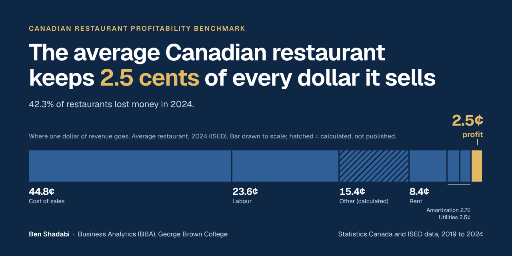
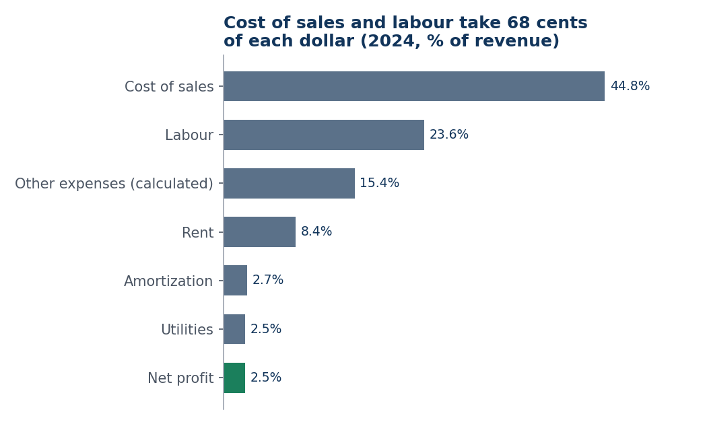
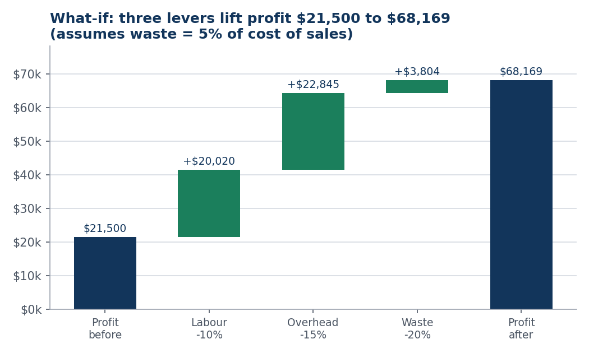
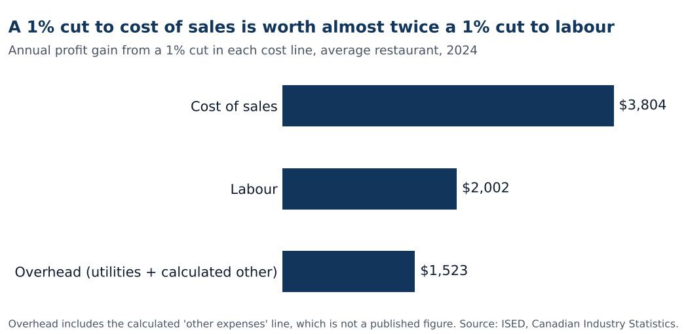

Open the dashboardCode and data on GitHub
What I found
Cost of sales (44.8% of revenue) and labour (23.6%) take about 68 cents of each dollar. Rent is 8.4%. With so little profit left, a small cost change moves profit a lot.

The what-if
I tested three levers on that average restaurant: labour cost down 10%, overhead down 15%, and food waste down 20%. In the headline case they move profit from $21,500 to $68,169 (margin 8.0%).

The overhead gain is partly built on a calculated line ("other expenses", $130,800), which is not a published figure. If I only cut the published utilities and telecom line, profit goes from $21,500 to $48,549 (margin 5.7%). That is the number I would defend first.

How I built it
- I typed the figures from public Statistics Canada and ISED releases (2019 to 2024) into CSV files and an Excel workbook.
- A Python script (pandas and matplotlib) rebuilds every chart from those files, and a second script builds the dashboard page.
- Eight SQL queries on the same data (growth with window functions, cost shares, the what-if) are in the
sqlfolder, with their results. - A script called
checks.pyrecomputes the headline numbers from the CSV files and fails if the README, the dashboard, the SQL results or the workbook disagree. GitHub runs it on every push. - I built it with Claude Code. I picked the question, the sources and the three levers, and re-checked the figures against the Statistics Canada releases.
- The two sources use different bases: ISED reports net profit (2.5%) and Statistics Canada reports operating profit (4.1%). I only compare numbers from the same source.
Why I picked restaurants
I co-founded and ran a dine-in and take-out restaurant for three years, from May 2020 to June 2023. Net profit grew 35% after inflation (year 3 compared with year 1), and I then led the sale of the business. This project checks those ideas against public data.
Limits: averages hide big gaps between restaurants (the bottom quarter lost $13,000 on average, the top quarter made $90,600), and some 2019 and 2022 figures come from later releases.